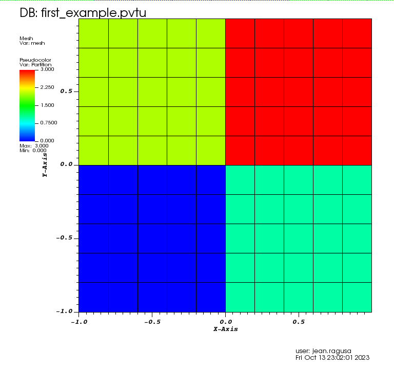

A First Example with Orthogonal Grids, KBA Partitioning, Vacuum BC, and Isotropic External Volumetric Source
Check the number of processes requested
This is not mandatory, as a user may want to run the code with different numbers of processes. However, this is often used in the many examples found in the regression suite, so we explain this practice early on:
check_num_procs==nilwill be true when running serially without MPInumber_of_processes ~= num_procswill be true when the number of MPI processes requested is not equal to the preset value of4.
To run the code, simply type: mpiexec -n 4 *path/to*/opensn *input_filename*.lua
For more runtime options, type *path/to*/opensn -h for help.
-- Check num_procs
num_procs = 4
if (check_num_procs==nil and number_of_processes ~= num_procs) then
Log(LOG_0ERROR,"Incorrect amount of processors. " ..
"Expected "..tostring(num_procs)..
". Pass check_num_procs=false to override if possible.")
os.exit(false)
end
Mesh
Here, we will use the in-house mesh generator for a simple Cartesian grid.
List of nodes
We first create a lua table for the list of nodes. Be mindful that lua indexing starts at 1.
-- Setup mesh
nodes={}
n_cells=10
length=2.
xmin = -length/2.
dx = length/n_cells
for i=1,(n_cells+1) do
k=i-1
nodes[i] = xmin + k*dx
end
Orthogonal Mesh Generation
We use the OrthogonalMeshGenerator and pass the list of nodes per dimension.
Here, we pass 2 times the same list of nodes to create a 2D geometry with square cells.
We also partition the 2D mesh into 2x2 subdomains using KBAGraphPartitioner.
Since we want the split the x-axis in 2, we give only 1 value in the xcuts array.
Likewise for ycuts.
The assignment to a partition is done based on where the cell center is located with respect to the various xcuts, ycuts, and zcuts (a fuzzy logic is applied to avoid issues).
The resulting mesh and partition is shown below:

meshgen = chi_mesh.OrthogonalMeshGenerator.Create
({
node_sets = {nodes,nodes},
partitioner = chi.KBAGraphPartitioner.Create
({
nx = 2, ny=2,
xcuts = {0.0}, ycuts = {0.0},
})
})
chi_mesh.MeshGenerator.Execute(meshgen)
Material IDs
We create a right parallelepiped logical volume that contains the entire mesh and we assign a 0 for material ID to all cells found inside the logical volume. Logical volumes are quite powerful, see subsequent tutorials on meshing.
-- Set Material IDs
vol0 = chi_mesh.RPPLogicalVolume.Create({infx=true, infy=true, infz=true})
chiVolumeMesherSetProperty(MATID_FROMLOGICAL,vol0,0)
Materials
We create a material and add two properties to it:
TRANSPORT_XSECTIONS for the transport cross sections, and
ISOTROPIC_MG_SOURCE for the isotropic volumetric source
-- Add materials
materials = {}
materials[1] = chiPhysicsAddMaterial("Material_A");
chiPhysicsMaterialAddProperty(materials[1],TRANSPORT_XSECTIONS)
chiPhysicsMaterialAddProperty(materials[1],ISOTROPIC_MG_SOURCE)
Cross Sections
We assign the cross sections to the material by loading the file containing the cross sections.
chiPhysicsMaterialSetProperty(materials[1],TRANSPORT_XSECTIONS,
CHI_XSFILE,"xs_1g_MatA.cxs")
Volumetric Source
We create a lua table containing the volumetric multigroup source and assign it to the material by passing that array.
num_groups = 1
src={}
for g=1,num_groups do
src[g] = 1.0
end
chiPhysicsMaterialSetProperty(materials[1],ISOTROPIC_MG_SOURCE,FROM_ARRAY,src)
Angular Quadrature
We call a product Gauss-Legendre-Chebyshev quadrature and pass the number of positive polar cosines (here npolar = 2) and the number of azimuthal subdivisions in one quadrant (nazimu = 1). This creates a 3D angular quadrature.
We finish by optimizing the quadrature to only use the positive hemisphere for 2D simulations.
-- Setup the Angular Quadrature
nazimu = 1
npolar = 2
pquad = chiCreateProductQuadrature(GAUSS_LEGENDRE_CHEBYSHEV,nazimu,npolar)
chiOptimizeAngularQuadratureForPolarSymmetry(pquad, 4.0*math.pi)
Linear Boltzmann Solver
Options for the Linear Boltzmann Solver (LBS)
In the LBS block, we provide
the number of energy groups,
the groupsets (with 0-indexing), the handle for the angular quadrature, the angle aggregation, the solver type, tolerances, and other solver options.
-- Setup LBS parameters
lbs_block =
{
num_groups = num_groups,
groupsets =
{
{
groups_from_to = {0, 0},
angular_quadrature_handle = pquad,
angle_aggregation_num_subsets = 1,
inner_linear_method = "gmres",
l_abs_tol = 1.0e-6,
l_max_its = 300,
gmres_restart_interval = 30,
}
}
}
Further Options for the Linear Boltzmann Solver
In the LBS options, we pass the maximum scattering order to be employed (should be less than the one supplied the cross section file)
lbs_options =
{
scattering_order = 0,
}
Putting the Linear Boltzmann Solver Together
We then create the physics solver, initialize it, and execute it.
phys = lbs.DiscreteOrdinatesSolver.Create(lbs_block)
lbs.SetOptions(phys, lbs_options)
ss_solver = lbs.SteadyStateSolver.Create({lbs_solver_handle = phys})
chiSolverInitialize(ss_solver)
chiSolverExecute(ss_solver)
Post-Processing via Field Functions
We extract the scalar flux (i.e., the first entry in the field function list; recall that lua indexing starts at 1) and export it to a VTK file whose name is supplied by the user.
The resulting scalar flux is shown below:

fflist,count = chiLBSGetScalarFieldFunctionList(phys)
vtk_basename = "first_example"
chiExportFieldFunctionToVTK(fflist[1],vtk_basename)
Possible Extensions
Change the number of MPI processes (you may want to delete the safeguard at the top of the input file to run with any number of MPI ranks);
Change the spatial resolution by increasing or decreasing the number of cells;
Change the angular resolution by increasing or decreasing the number of polar and azimuthal subdivisions.
The complete input is below:
You can copy/paste the text below or look in the file named /Users/andrsd/devel/openSn/doc/tutorials/lbs/first/first_example.lua:
-- Check num_procs
num_procs = 4
if (check_num_procs==nil and number_of_processes ~= num_procs) then
Log(LOG_0ERROR,"Incorrect amount of processors. " ..
"Expected "..tostring(num_procs)..
". Pass check_num_procs=false to override if possible.")
os.exit(false)
end
-- Setup mesh
nodes={}
n_cells=10
length=2.
xmin = -length/2.
dx = length/n_cells
for i=1,(n_cells+1) do
k=i-1
nodes[i] = xmin + k*dx
end
meshgen = chi_mesh.OrthogonalMeshGenerator.Create
({
node_sets = {nodes,nodes},
partitioner = chi.KBAGraphPartitioner.Create
({
nx = 2, ny=2,
xcuts = {0.0}, ycuts = {0.0},
})
})
chi_mesh.MeshGenerator.Execute(meshgen)
-- Set Material IDs
vol0 = chi_mesh.RPPLogicalVolume.Create({infx=true, infy=true, infz=true})
chiVolumeMesherSetProperty(MATID_FROMLOGICAL,vol0,0)
-- Add materials
materials = {}
materials[1] = chiPhysicsAddMaterial("Material_A");
chiPhysicsMaterialAddProperty(materials[1],TRANSPORT_XSECTIONS)
chiPhysicsMaterialAddProperty(materials[1],ISOTROPIC_MG_SOURCE)
chiPhysicsMaterialSetProperty(materials[1],TRANSPORT_XSECTIONS,
CHI_XSFILE,"xs_1g_MatA.cxs")
num_groups = 1
src={}
for g=1,num_groups do
src[g] = 1.0
end
chiPhysicsMaterialSetProperty(materials[1],ISOTROPIC_MG_SOURCE,FROM_ARRAY,src)
-- Setup the Angular Quadrature
nazimu = 1
npolar = 2
pquad = chiCreateProductQuadrature(GAUSS_LEGENDRE_CHEBYSHEV,nazimu,npolar)
chiOptimizeAngularQuadratureForPolarSymmetry(pquad, 4.0*math.pi)
-- Setup LBS parameters
lbs_block =
{
num_groups = num_groups,
groupsets =
{
{
groups_from_to = {0, 0},
angular_quadrature_handle = pquad,
angle_aggregation_num_subsets = 1,
inner_linear_method = "gmres",
l_abs_tol = 1.0e-6,
l_max_its = 300,
gmres_restart_interval = 30,
}
}
}
lbs_options =
{
scattering_order = 0,
}
phys = lbs.DiscreteOrdinatesSolver.Create(lbs_block)
lbs.SetOptions(phys, lbs_options)
--############################################### Initialize and Execute Solver
ss_solver = lbs.SteadyStateSolver.Create({lbs_solver_handle = phys})
chiSolverInitialize(ss_solver)
chiSolverExecute(ss_solver)
--############################################### Get field functions
fflist,count = chiLBSGetScalarFieldFunctionList(phys)
vtk_basename = "first_example"
chiExportFieldFunctionToVTK(fflist[1],vtk_basename)
Back to \ref lbs_tutorials